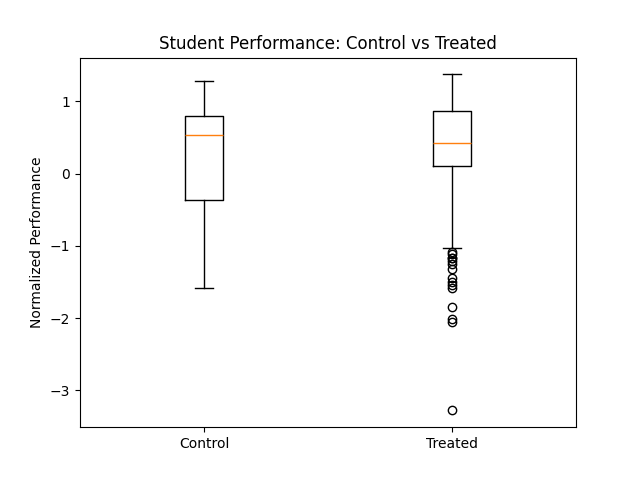

Data Analysis & Visualization
The Boxplot: Control vs Treated Groups

This boxplot compares normalized student performance between control (low study hours) and treated (high study hours) groups
Reading the Boxplot
Boxplot Components:
- Box (Middle 50% of Data): Contains half the students. Shows how spread out the "typical" students are
- Line Inside Box (Median): The middle value. 50% of students score above it, 50% below
- Whiskers (Lines Extending from Box): Show the range of typical data (usually all data except extreme outliers)
- Dots (Outliers): Unusual data points far from the typical range
What Our Boxplot Shows
Median Comparison
The line inside each box shows the median performance:
- Control Group Median: 0.530 (higher on the chart)
- Treated Group Median: 0.425 (slightly lower on the chart)
- Interpretation: At first glance, control seems "better," but this is misleading...
Understanding the Contradiction
Finding: If the treated group's ATE is +0.13 (better), why does its median appear lower?
Answer: The boxplot shows medians, while the ATE shows the mean (average).
- Outliers in Treated Group: Many poor-performing dots (below -1.0) pull down the median
- Mean is Different: The mean (0.13 higher for treated) accounts for all values, smoothing out the outliers
- Why the Outliers?: Some students study a lot but still perform poorly—perhaps due to learning difficulty or other factors
- Reality Check: Both statistics are correct. They just measure different things.
Box Width (Spread/Variability)
- Treated Group (Right): Wider box = more variation. Students who study have more diverse outcomes
- Control Group (Left): Narrower box = less variation. Low-study students are more consistent
- Interpretation: Extra study increases the range of possibilities—it helps some a lot, doesn't help others much
Key Insights:
- ✅ Treatment Helps on Average: ATE of +0.13 shows mean treated performance is higher
- ⚠️ Not Universal: The outliers show that studying doesn't guarantee success for everyone
- 📊 Increased Variability: Students who study more have more diverse outcomes (wider spread)
- 🎯 Causal Effect Confirmed: After matching on confounders, the treated group is genuinely better on average
What We're NOT Seeing
- ❌ A transformation that makes everyone in the treated group better (some outliers are actually worse)
- ❌ That high study hours guarantee high performance
- ❌ That studying is the only factor affecting performance
What we ARE seeing: On average, increased study hours shift the distribution upward, creating a real causal benefit despite the outliers.